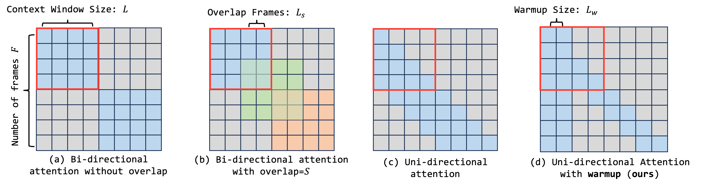
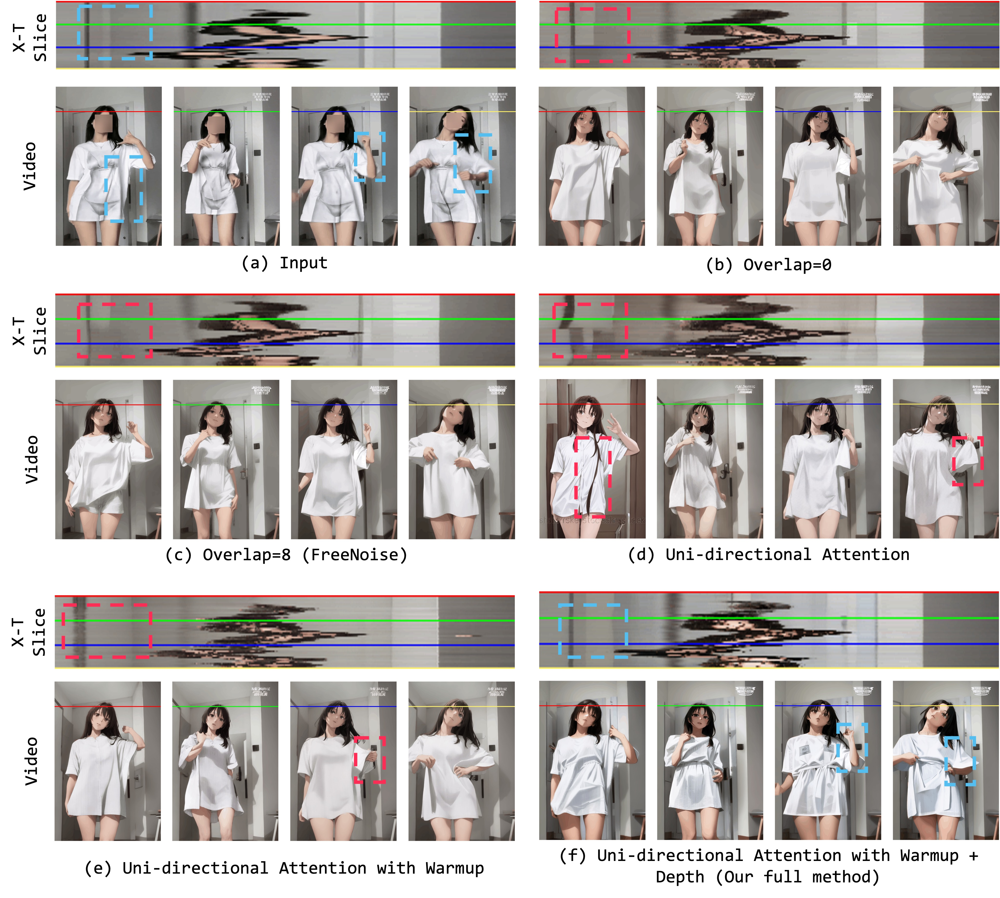
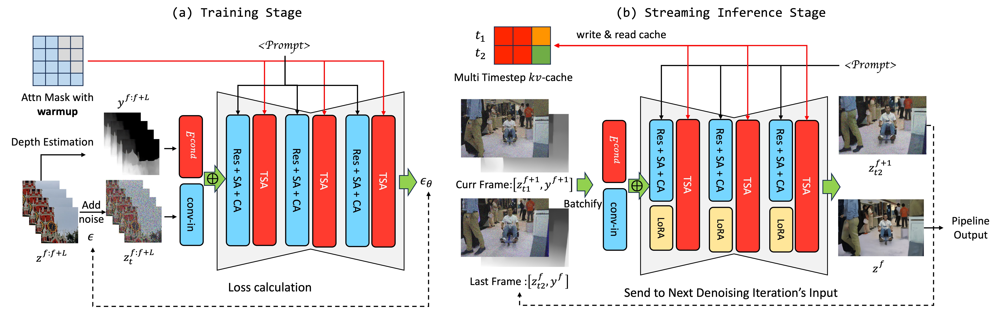
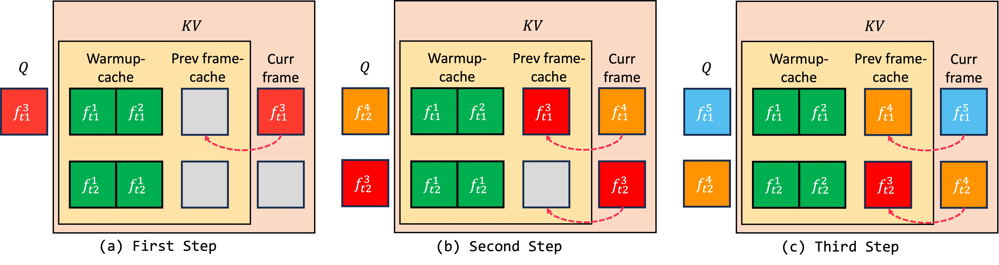
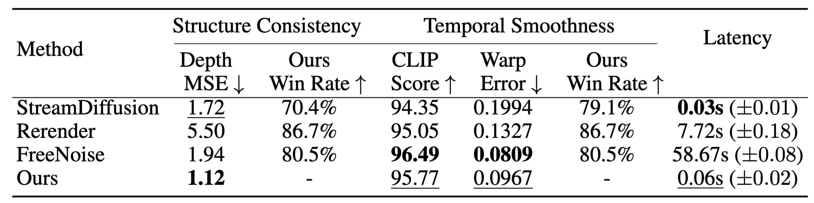

TL;DR: Live2Diff is the first attempt that enables
uni-directional attention modeling to video diffusion models for live video steam
processing, and achieves 16FPS on RTX 4090 GPU.
Live Stream Video Translation with Diffusion Pipeline
Demo on RTX 4090 GPU
Abstract

Large Language Models have shown remarkable efficacy in generating streaming data such as text and audio,
thanks to their temporally uni-directional attention mechanism, which models correlations between the
current token and previous tokens.
However, video streaming remains much less explored, despite a growing need for live video processing.
State-of-the-art video diffusion models leverage
bi-directional temporal attention to model the correlations between the current
frame and all the
surrounding (i.e. including future) frames, which
hinders them from processing streaming
videos.
To address this problem, we present Live2Diff,
the first attempt at designing a video diffusion model
with uni-directional temporal attention, specifically targeting live streaming video translation.
Compared to previous works, our approach ensures temporal consistency and smoothness by correlating the
current frame with its predecessors and a few initial warmup frames, without any future frames.
Additionally, we use a highly efficient denoising scheme featuring a kv-cache
mechanism and pipelining, to
facilitate streaming video translation at interactive framerates.
Extensive experiments demonstrate the effectiveness of the proposed attention mechanism and pipeline,
outperforming previous methods in terms of temporal smoothness and/or efficiency.
Motivation
See Image Comparison

The color of each line represents the time in the X-T plot. Red dashed
boxes denote regions suffering from
flickering and structural inconsistency, while blue boxes indicate
areas where these issues are resolved.
The X-T slice shows how the pixel values at the same X-coordinate change over time T. The position of the
horizontal lines in the video corresponds to the X-coordinate positions visualized in the X-T slice.
(b), (c) and (d): Flickering and gradually in background region.
(e): with attention mechanism in our paper, background flickering is reduced.
(f, our full method): the structure inconsistency issue is resolved by incorporating depth
conditioning.
Method
Overall Framework

Our models take noisy latent $z_t^F$ and depth condition $y^F$ as input, where $t$ is the diffusion timestep
determines the noise strength, and F denotes the frame index. ⊕ denotes the element-wise add operation. (a)
In training stage, the number of frames in each video clip is equal to the context window size. We utilize a
specifically designed attention mask. This allows the initial frames to engage in bi-directional attention,
while the subsequent frames employ uni-directional attention. (b) In streaming inference stage, the UNet
takes samples equals to the total denoising timesteps as input, samples belong to different timesteps and
frames are grouped into one forward batch. The kv-cache is read and updated during temporal self-attention
operation.
Multi-timestep KV-Cache
See Illustration Version

Example of our $kv$-cache for the first steps of a stream, with $L_w = T = 2$.
The colors of the squares indicate which frame they belong to.
$Q$, $K$, $V$ are the matrices used in temporal self-attention.
Each row belongs to one of the two denoising steps.
Red arrows are overwrite operations.
Results
Qualitative Results
See Image Comparison
We compare the output quality of our method to a number of previous approaches:
(a) shows temporally adjacent frames, while
(b) shows frames temporally further apart. While our method preserves the spatial
structure of the input well, producing the desired output styles, previous methods tend to change even
the
semantic content of the frames.
Quantitative Results

We averaged scores over 90 sequences from the DAVIS-2017
dataset. Our method scores highest in Depth MSE and second-highest for temporal
smoothness CLIP scores and warp error. Our user study win rates confirm that our method produces the best
quality for both
aspects (i.e. all win rates over 50%).
 [Comming Soon]
[Comming Soon]
 [Paper]
[Paper]
 [Code]
[Code]